Sin pérdida. De verdad.
FLAC, ALAC, AIFF, WAV y CAF suenan tal como se grabaron. Los archivos de alta resolución llevan la insignia HI-RES junto a su formato real: códec, bits y frecuencia.
24 bit
Hi-Res · Sin pérdida · CarPlay · Siri
El reproductor para la música que ya es tuya: tus FLAC, tus discos ripeados, tu colección de años. Suena como se grabó, en tu iPhone, tu iPad y tu auto. Sin suscripciones, sin cuentas, sin anuncios.
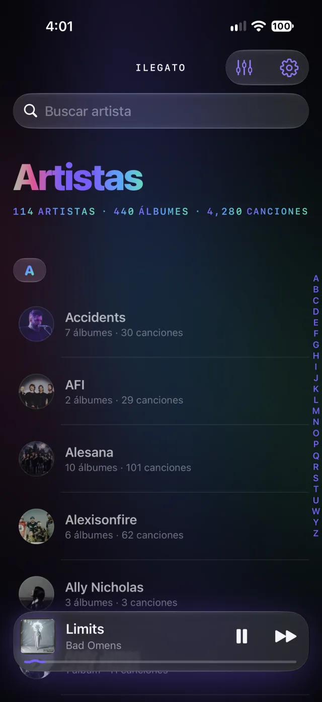
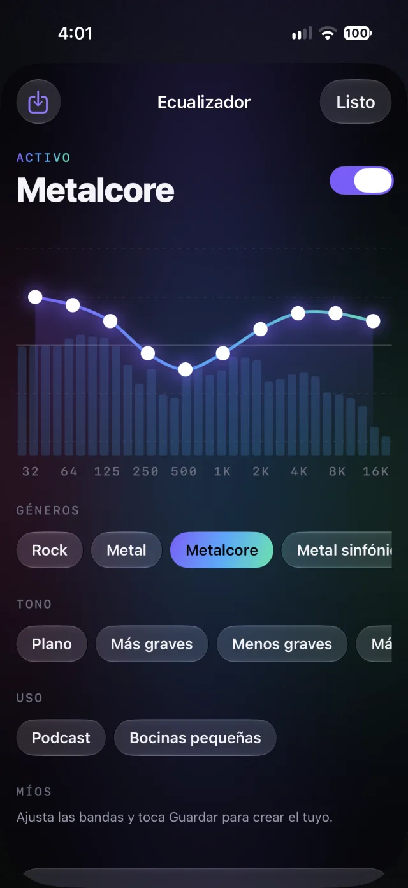
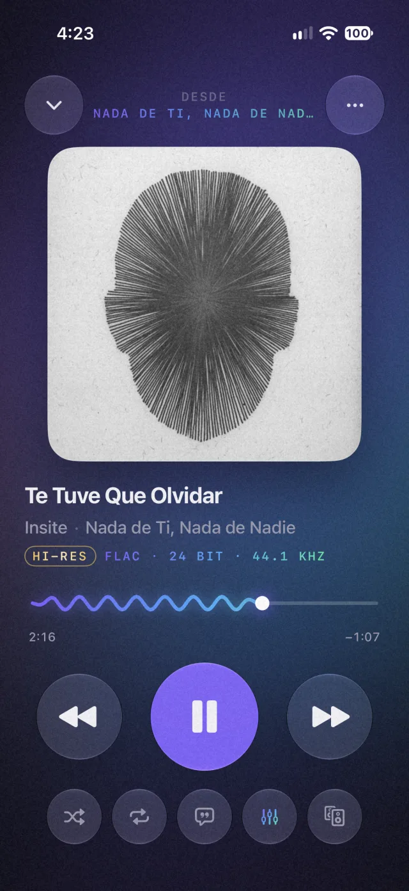
Por qué iLegato
Las apps de streaming te rentan un catálogo. iLegato hace lo contrario: toma la colección que ya es tuya y la trata con el cuidado que merece.
FLAC, ALAC, AIFF, WAV y CAF suenan tal como se grabaron. Los archivos de alta resolución llevan la insignia HI-RES junto a su formato real: códec, bits y frecuencia.
Sin cuentas, sin mensualidades, sin anuncios. Tu música no caduca.
Los discos en vivo y conceptuales fluyen sin silencios entre canciones.
Sin cuentas, sin anuncios y sin rastreo. Tu biblioteca vive en tu dispositivo.
El tema Dinámico toma los colores de la portada que está sonando. Toda la app respira con tu música.
AirPlay 2, Bluetooth y Google Cast desde una sola pantalla. Tu TV, tus HomePod, tus bocinas Nest: la cola, el aleatorio y la repetición siguen funcionando igual.
CarPlay con tu biblioteca completa y Siri: "Oye Siri, pon Silverstein en iLegato". Sin tocar el teléfono.
Lado a lado
| iLegato | Apps de streaming | Reproductores básicos | |
|---|---|---|---|
| Reproduce la música que ya tienes (FLAC, AIFF, WAV…) | ✓ | ✕ | A veces |
| Sin suscripción ni cuenta | ✓ | ✕ | ✓ |
| Funciona sin internet, siempre | ✓ | Con descargas | ✓ |
| Formato real visible (bits y kHz) e insignia Hi-Res | ✓ | Parcial | ✕ |
| Ecualizador de 10 bandas con presets por género | ✓ | Básico | A veces |
| CarPlay, Siri, AirPlay y Google Cast | ✓ | Varía | ✕ |
| Editor de etiquetas y carátulas | ✓ | ✕ | A veces |
| Sin anuncios ni rastreo | ✓ | Varía | Varía |
Comparación general por categoría, no contra una app en particular.
La app
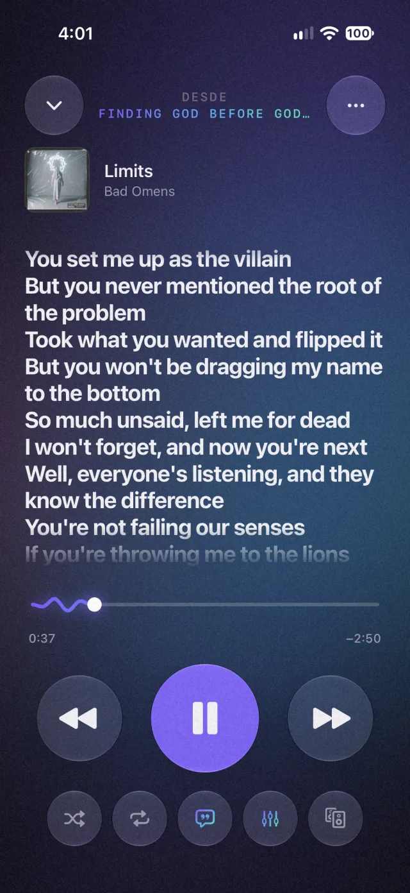
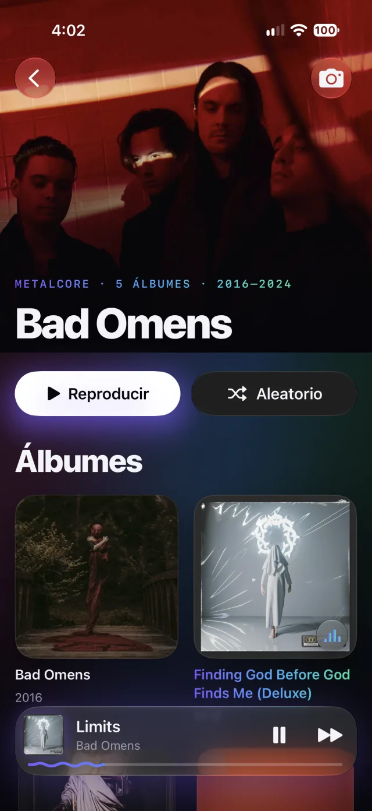
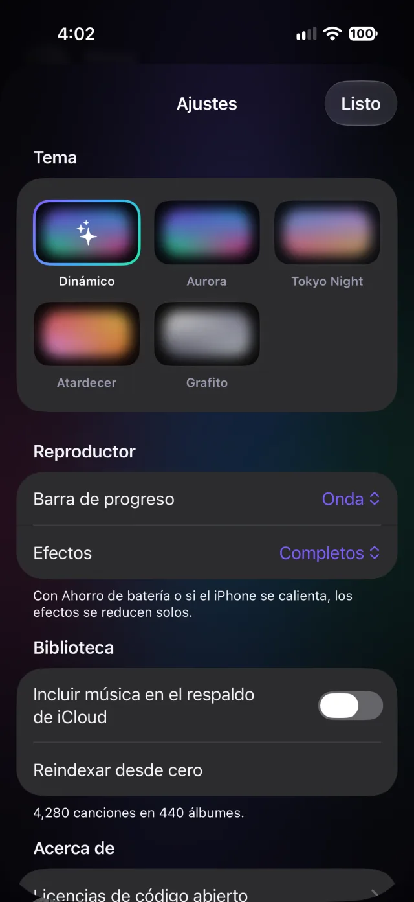
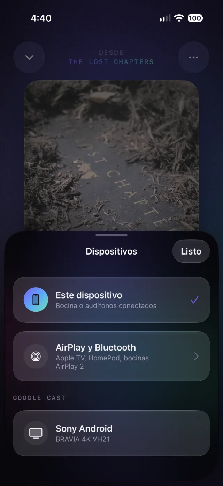
01 · Reproductor
La carátula en grande, el formato real de cada archivo y una barra de progreso con ondas que reaccionan a la música.
02 · Ecualizador
Diez bandas con el espectro en vivo y más de 30 presets por género, tono y uso. O ajusta las bandas y guarda los tuyos.
03 · Letras
Las letras guardadas en tus archivos, sincronizadas línea por línea cuando vienen con tiempos (.lrc).
04 · Biblioteca
Copias tus carpetas y iLegato lee las etiquetas: artistas de la A a la Z, álbumes por año, discos separados. Se actualiza sola cuando agregas música.
05 · Temas
Dinámico toma los tonos de la portada que suena. También Aurora, Tokyo Night, Atardecer y Grafito. Los efectos se reducen solos con Ahorro de batería.
06 · Dispositivos
Apple TV, HomePod y bocinas AirPlay 2, audífonos Bluetooth o tu TV y bocinas con Google Cast. Todo desde una sola pantalla.
Pruébalo aquí
Son las curvas reales de la app. Toca un género y mira cómo cambia.
Activo
iPad
Tus artistas a la izquierda y su música a la derecha, con el reproductor a pantalla completa en horizontal.
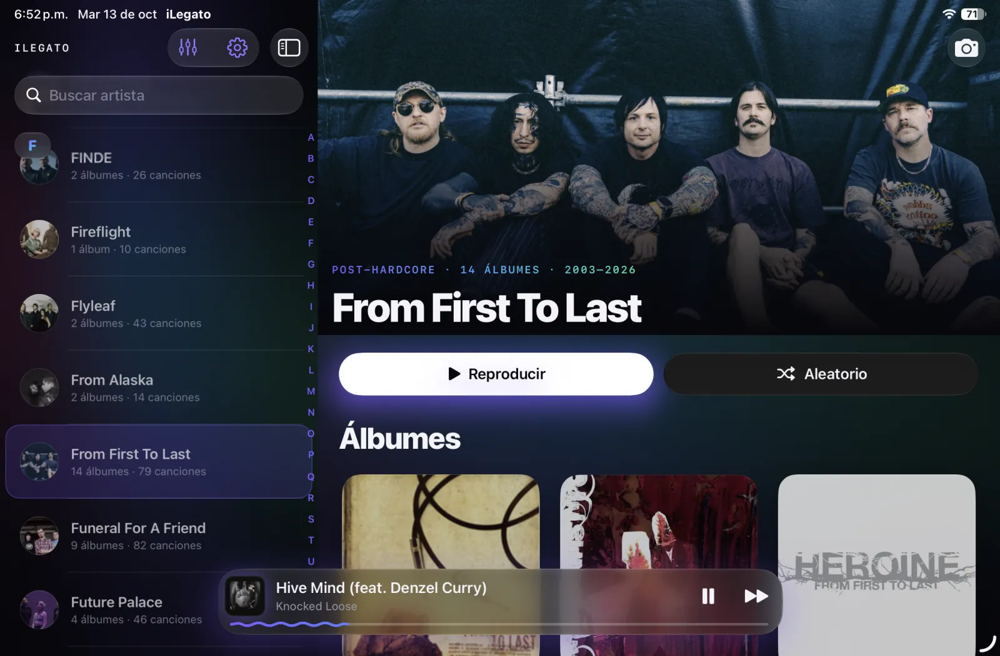
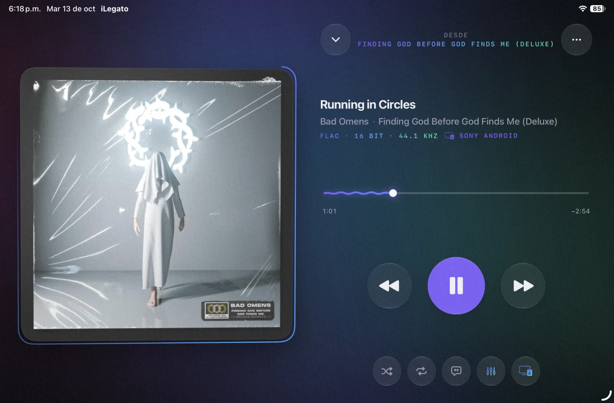
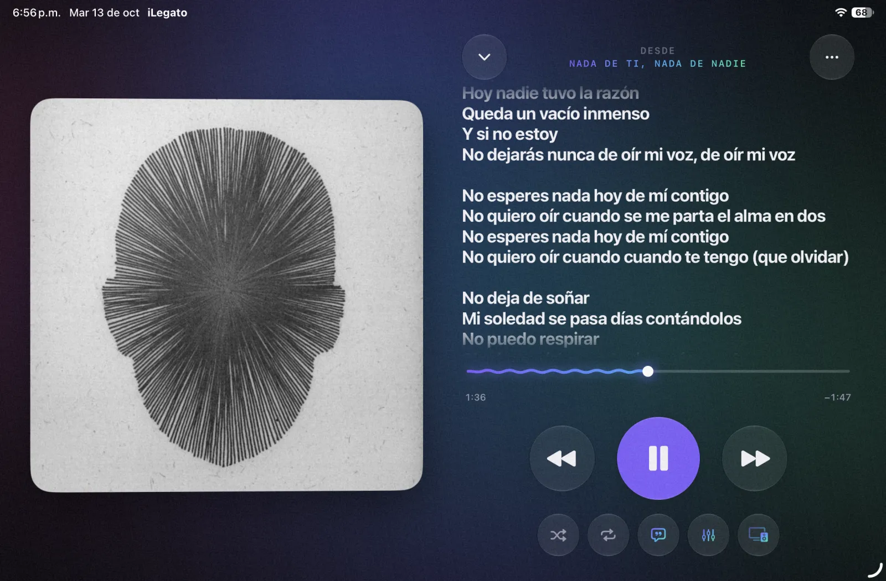
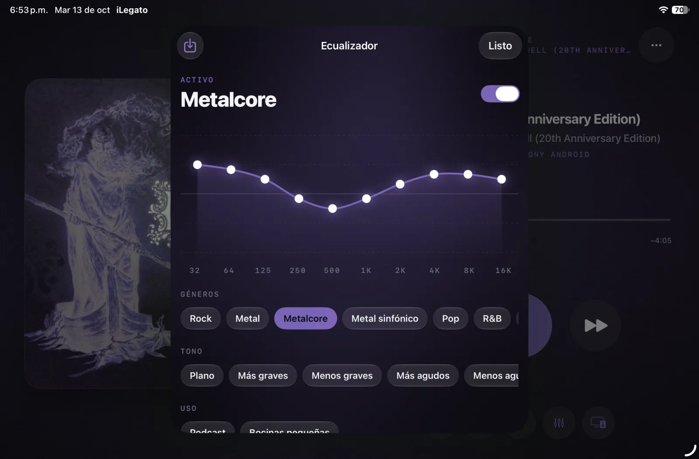
CarPlay · Siri
Explora tus artistas y álbumes en la pantalla del auto, o simplemente pídeselo a Siri.
Siri
Artistas, álbumes, canciones o géneros. Funciona con el iPhone en la bolsa, con la app cerrada y en CarPlay.
Preguntas
Conecta tu iPhone o iPad a la Mac con el cable, ábrelo en el Finder, ve a la pestaña Archivos y arrastra tus carpetas sobre iLegato. También puedes usar la app Archivos con iCloud Drive, AirDrop o una memoria USB-C.
iLegato lee las etiquetas y organiza todo por artista, álbum y disco.
FLAC, ALAC, AIFF, WAV, CAF, AAC y MP3. Los archivos de 24 bits o de 88.2 kHz en adelante se marcan como Hi-Res.
No. Tu música está en tu dispositivo y iLegato no tiene cuentas ni suscripciones. Solo usas la red si quieres enviar la música a una TV o bocina.
Di el nombre de la app al final: "Oye Siri, pon Bad Omens en iLegato". También funciona "en Legato". Puedes pedir artistas, álbumes, canciones, géneros o "pon música".
Sí. Al conectar tu iPhone, iLegato aparece en la pantalla del auto con Inicio, Artistas y Álbumes, el ecualizador y la cola de reproducción.
iLegato no tiene cuentas, servidores propios ni publicidad, y no te rastrea. Lo único que sale de tu dispositivo es el diagnóstico técnico y anónimo que el componente de Google Cast envía a Google para mejorar Cast. Lee la política de privacidad completa.